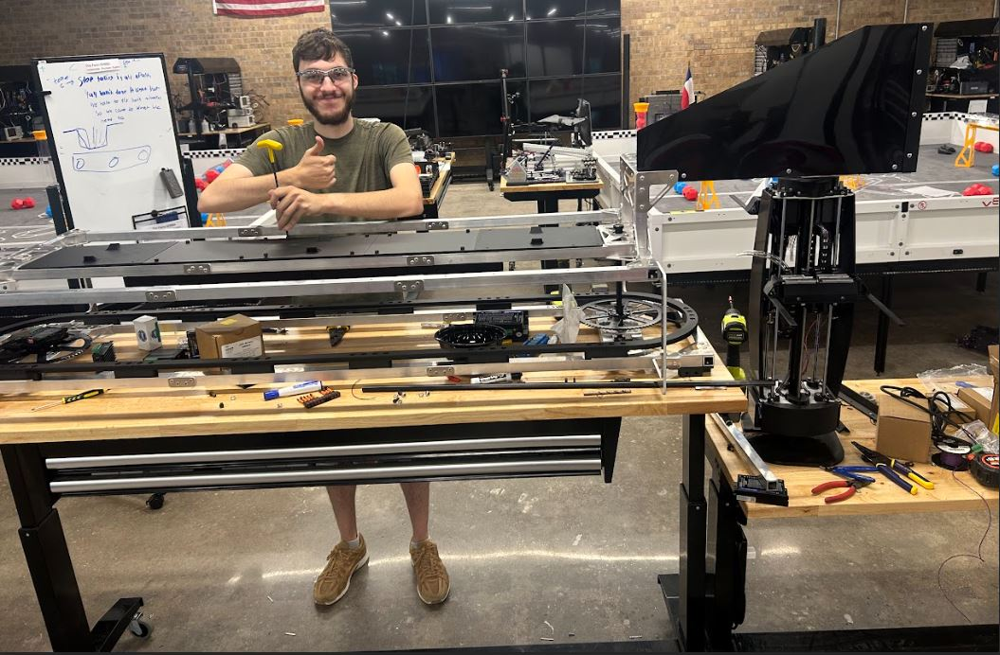
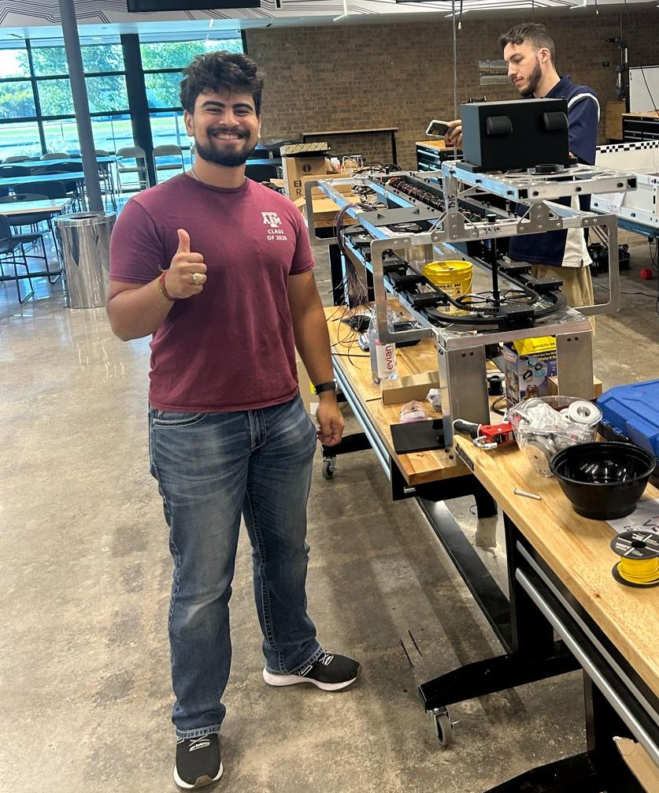

Logo
Automated bowl assembly from kiosk order to physical fulfillment.
Lechuga is an automated food service prototype designed to assemble bowl-based meals using coordinated hoppers, conveyors, actuators, sensors, and a customer kiosk interface. My work focused on software architecture, order coordination, kiosk/backend development, embedded motor control, communication between controllers, and error handling across subsystems.





My contributions
Specific work I did on Lechuga
Customer Ordering Interface
Developed a kiosk ordering application for the Automated Lechuga system using a web front end, Node.js backend, and Electron wrapper. I worked with a UI freelancer to create the initial design in Figma, then used AI-assisted development tools to convert the design into working code. From there, I manually iterated on the generated code by fixing layout bugs, refining the visual design, improving responsiveness, and adapting the interface to match the needs of the physical kiosk system. The application supports multiple kiosk clients, accepts card payments through Stripe, sends electronic receipts, communicates completed orders to the automation system, uploads order history to the cloud, and responds to machine faults by preventing customers from placing orders when the automated system cannot reliably fulfill them.

Order and Automation Controller
Developed a coordinator program responsible for converting customer orders from the kiosk into a format usable by the automation system. The controller determines what each subsystem needs to do to fulfill each bowl, sends motion instructions to the appropriate devices, tracks bowls as they move through the system, and monitors completion status. It also communicates faults to the outside world by updating the kiosk interface for customers and notifying operators through text or email when an error occurs. Because the controller must manage orders, subsystem states, machine feedback, and external communication at the same time, it uses concurrent programming techniques and message-based coordination to keep the system organized and responsive.
Embedded Motor Control and Actuator Coordination
Programmed embedded control logic for the machine subsystems using state-machine-based sequencing. Each subsystem determines its next action based on the command received from the coordinator, its own current state, and the reported state of other subsystems. Motors are controlled using hardware timers on the Teensy microcontrollers and follow motion profiles to reduce jerk during movement. Subsystems communicate through CAN bus messaging, allowing the larger machine to coordinate actions across food dispensing, bowl movement, and delivery mechanisms. Sensors are placed throughout the system for homing and zeroing, tracking food dispensing, detecting subsystem position, and providing redundant verification that commanded actions were completed correctly.
Code excerpts
Lechuga code slices
Typed order command
Shows the interface between kiosk order data and automation commands.
type IngredientId = "rice" | "chicken" | "lettuce" | "salsa";
interface BowlOrder {
orderId: string;
createdAt: string;
ingredients: IngredientId[];
paymentStatus: "pending" | "paid" | "failed";
}
function buildAutomationCommand(order: BowlOrder) {
if (order.paymentStatus !== "paid") {
throw new Error("Order cannot be dispatched before payment.");
}
return {
command: "DISPATCH_ORDER",
orderId: order.orderId,
dispenseList: order.ingredients.map((ingredient, index) => ({
ingredient,
sequence: index + 1
}))
};
}Embedded state-machine pattern
Shows explicit actuator states for movement, homing, completion, and faults.
enum class AxisState {
Idle,
Homing,
Moving,
Complete,
Fault
};
void updateAxis(Axis& axis) {
switch (axis.state) {
case AxisState::Idle:
if (axis.hasQueuedMove()) axis.beginMove();
break;
case AxisState::Homing:
if (axis.homeSensorActive()) axis.zeroPosition();
break;
case AxisState::Moving:
axis.stepWithAccelerationProfile();
if (axis.targetReached()) axis.state = AxisState::Complete;
break;
case AxisState::Fault:
axis.disableDriver();
break;
}
}